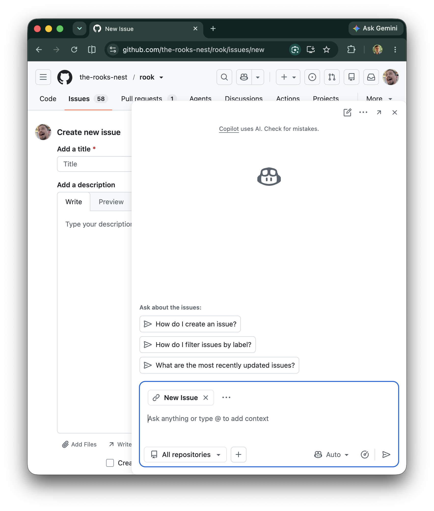
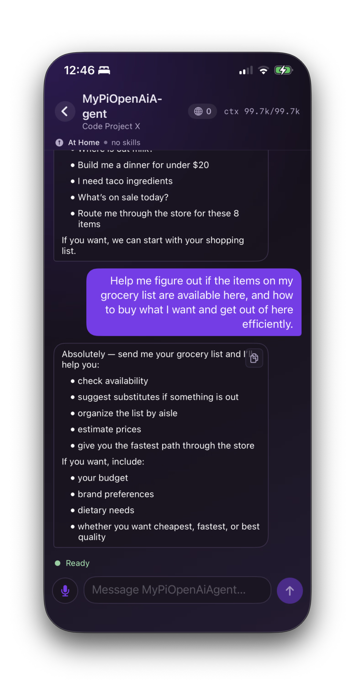

John Berryman · O'Reilly Superstream · July 23, 2026
Opening frame
№1 / 18
Build Your Own Agent
Escape the Harness
Agents are way simpler than they look,
they can do far more than software development,
and we can take them almost anywhere.
Agentic Engineering
Superstream

John Berryman
Arcturus Labs
AI product consulting · applied agent systems
https://arcturus-labs.com
John Berryman · O'Reilly Superstream · July 23, 2026
№2 / 18
The way we're thinking about agents is way too narrow.
Agents are too complex for normal developers to build
Agents are mostly just good at software development
The main way to use agents are from within a terminal
https://arcturus-labs.com
John Berryman · O'Reilly Superstream · July 23, 2026
№3 / 18
Today we will demonstrate that
Agents are way simpler than you think
Agents can do way more than software development
Agents can are useful in many more places besides the terminal
https://arcturus-labs.com
John Berryman · O'Reilly Superstream · July 23, 2026
№4 / 18
Let’s strip the harness down to its core.
Then let's
build it back up.
build it back up.
https://arcturus-labs.com
John Berryman · O'Reilly Superstream · July 23, 2026
№5 / 18
Today's coding agents look insanely complex
The visible product surface
- Slash commands
- Tons of built-in tools
- MCP / extensions / integrations
- Permission systems
- Complex TUI
- Numerous hooks
- Subagents / Agent Teams
https://arcturus-labs.com
John Berryman · O'Reilly Superstream · July 23, 2026
№6 / 18
Demo 1 - just a prompt and a model
What Matters
- Smallest possible useful "agent"
- Just a prompt plus a model call
Run it
Command
cd /Users/johnberryman/projects/github/arcturus-labs/agents-showcase && uv run src/1-just-a-model.py
Prompt
tell me a joke
https://arcturus-labs.com
John Berryman · O'Reilly Superstream · July 23, 2026№7 / 18
Demo 2 - introduce the tool loop
What Matters
- Tool lets the model see and interact with the outside world
- It's just a while loop that wraps the model and tool execution
Run it
Command
cd /Users/johnberryman/projects/github/arcturus-labs/agents-showcase && uv run src/2-tool-loop.py
Prompt
Does Hacker News have any book recommendations about building AI Assistants?
https://arcturus-labs.com
John Berryman · O'Reilly Superstream · July 23, 2026№8 / 18
Demo 3 - tool usage standardized
What Matters
- Same tool-calling pattern
- Much better developer ergonomics
Run it
Command
cd /Users/johnberryman/projects/github/arcturus-labs/agents-showcase && uv run src/3-pydantic-ai.py
Prompt
Does Hacker News have any book recommendations about building AI Assistants?
https://arcturus-labs.com
John Berryman · O'Reilly Superstream · July 23, 2026№9 / 18
Demo 4 - your first actual coding agent
What Matters
- Read, write, and shell are sufficient tools to make a simple coding agent
- Models are so tuned for software that you don't need instructions
Run it
Command
cd /Users/johnberryman/projects/github/arcturus-labs/agents-showcase && uv run src/4-pydantic-ai-read-write-edit.py
Prompt
In /Users/johnberryman/projects/github/arcturus-labs/agents-showcase/scratch_space, create a cli tool in rust that generates the first N primes (N provided as argument), make standard rust package, build it, tell me how to run it as a one-liner (use absolute paths).
Then
Review the code and run it.
https://arcturus-labs.com
John Berryman · O'Reilly Superstream · July 23, 2026№10 / 18
Demo 5 - introducing agent skills
What Matters
- If an agent can
read, you can save instruction files for it, agent skills - English becomes the programming language
- Agent skills are the programs
- Agents are the AI software runtime
Run it
Command
cd /Users/johnberryman/projects/github/arcturus-labs/agents-showcase && uv run src/5-pydantic-ai-research-skills.py
Prompt
Why did the Roman Republic turn into the Roman Empire?
https://arcturus-labs.com
John Berryman · O'Reilly Superstream · July 23, 2026№11 / 18
Demo 6 - sessions/hooks/compaction
What Matters
- User input is just another loop around the tool calling loop
- Hooks are callback functions executed at specific lifecycle points
Run it
Command
cd /Users/johnberryman/projects/github/arcturus-labs/agents-showcase && uv run src/6-pydantic-ai-assistant-w-compaction.py
Prompt flow
1. Tell me a joke
2. Explain the joke
3. Why?
4. Why?
5. Why? Keep going until compaction happens
https://arcturus-labs.com
John Berryman · O'Reilly Superstream · July 23, 2026
№12 / 18
The ecosystem is standardizing
Pi
Extension-first
export default (pi: ExtensionAPI) => {
pi.registerTool({
name: "search_docs",
description: "Search company docs",
parameters: Type.Object({ query: Type.String() }),
async execute(_id, { query }, signal) {
return {
content: [{ type: "text", text: await searchDocs(query, signal) }],
details: {},
};
},
});
pi.registerCommand("dashboard", {
description: "Open the dashboard",
handler: (_args, ctx) => openDashboard(ctx.cwd),
});
};
Flue
App building blocks
const instructions = `
Triage a bug report end-to-end: reproduce the bug,
diagnose the root cause, verify whether the behavior is
intentional, and attempt a fix.`
export default defineAgent(() => ({
model: 'anthropic/claude-sonnet-4-6',
tools: [replyToIssue],
skills: [triage, verify],
sandbox: local(),
instructions,
}))
https://arcturus-labs.com
John Berryman · O'Reilly Superstream · July 23, 2026№13 / 18
Great, building agents isn't that hard.
Now it's time to
unharness them.
unharness them.
https://arcturus-labs.com
John Berryman · O'Reilly Superstream · July 23, 2026№14 / 18
Agents can live inside software products
Example: Job application review assistant
What Matters
- Same model, skills, tools, instructions – adds structured output
- Traditional application code call the agent to execute a workflow
- Since the program is English, the user can read and fix code.
Run it
Command
cd /Users/johnberryman/projects/github/arcturus-labs/agents-showcase && uv run src/7-pydantic-ai-reviewer.py
https://arcturus-labs.com
John Berryman · O'Reilly Superstream · July 23, 2026№15 / 18
assistants can help us interact with software
B.Y.O.A. – Bring Your Own Agent
Why it matters
- Built-in website assistants have tools, but not your full context.
- Your assistant knows everything about your current task at hand.
- Imagine if your assistant was given tools and instructions to interact with the website.
- You and the assistant can work on the same surface.

https://arcturus-labs.com
John Berryman · O'Reilly Superstream · July 23, 2026№16 / 18
Agents can help us navigate physical environments and locations
B.Y.O.A. into the real world
Why stop at websites and applications?
- Your assistant knows your goals and has access to your information.
- When you enter a location, your assistant gains tools and instructions for that environment.
- Grocery stores: reads your shopping list, helps you navigate inventory and aisles.
- Home environment: sets your thermostat, interacts with IoT devices

https://arcturus-labs.com
John Berryman · O'Reilly Superstream · July 23, 2026№17 / 18
the takeaways from this talk
Wrap-up:
- Agents and agent harnesses are not magic
- Building them increasingly looks like assembling Lego blocks
- Agents can do any task with the right instructions, tools, and data
- Programming them is getting easier, they speak English
- Agents can perform functions embedded inside traditional software
- Agents can exist outside traditional software products and even in physical environments as universal assistants
https://arcturus-labs.com
John Berryman · O'Reilly Superstream · July 23, 2026№18 / 18
How can you keep the takeaways?
Make your own agent today.
Code examples
The agents-showcase repository with the examples from this talk.
My Blog
My blog, where I regularly write about AI Product Engineering.
Videos and streams
My YouTube channel, where I post videos and live streams building AI Products.
Rook
My environment-aware personal assistant.
https://arcturus-labs.com